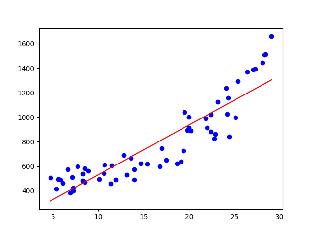
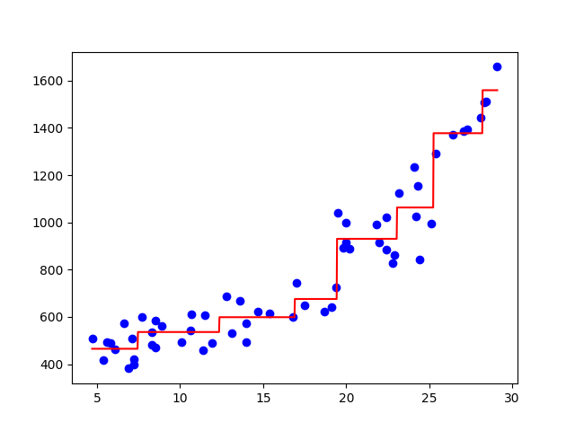

文系の文系による文系のためのプログラマー向けの機械学習ガイドです。今どきの機械学習ライブラリはとてもよくできているので、私のような数学ダメダメな文系プログラマーでも機械学習できちゃうんですな。機械学習してみたい文系プログラマーの皆様、すげー簡単ですから、一緒に機械学習しましょう。
本稿のプログラムはすべてhttps://github.com/tail-island/machine-learning-primerに置きましたので、ぜひ、実行してみてください。
機械学習とは？
コンピューターは頭が悪くて嫌になる！ コンピューターは頭が悪くて「アレをイイ感じにやっておいて」を理解できないから、我々プログラマーが細かくやり方を指示するプログラムを書いているんですもんね。そんなへっぽこなコンピューターが学習などという高度なことをできるなんて、とても信じられない！
はい。おっしゃる通り。実は機械学習（machine learning）ってのは無から有を生み出すすごいものではなくて、プログラム中のパラメーター（変数の値）を調整してくれるだけの、学習っちゃあ学習なんだけどなんだかなぁってものなんです。
具体例で考えましょう。西暦を令和に変換するプログラムを手で書いてみてください。たぶん、こんなコードになるんじゃないでしょうか？
def hand_made_version(year):
return year - 2018で、このコードの2018の部分を書くのが面倒くさいなぁ、コンピューターが自動で設定してくれれば楽だなぁと思ったとしてください。そんな時は、機械学習が有効です。コードはこんな感じ。
from sklearn.linear_model import LinearRegression
xs = ((2019,), (2020,), (2021,), (2022,), (2023,), (2024,), (2025,), (2026,), (2027,))
ys = (1, 2, 3, 4, 5, 6, 7, 8, 9)
model = LinearRegression()
model.fit(xs, ys)
def machine_learning_version(year):
xs = ((year,),)
ys = model.predict(xs)
return ys[0]コードが増えてるやんけ、という批判は忘れて、どうしてこのコードで西暦を令和に変換できるのかを考えてみましょう。
LinearRegressionクラスは、線形回帰（linear
regression）と呼ばれる機械学習の手法を実装したクラスで、線警回帰は、a1 * x[0] + a2 * x[1] + a3 * x[2] ... + bというプログラムで表現可能な場合向けの手法です。西暦から令和の場合は1 * year - 2018で表現できますから、この線形回帰がバッチリあてはまります。
で、そのa1 = 1やb = -2018はどうやって導くのかというと、データから導きます。そのデータが上のコードのxsとys。2019の時に1になるにはパラメーターをどんな値にすればよいのかなぁ、2020の時に2になるにはどうすればよいのかなぁと試して、できるだけ相違が少ない値を設定していきます。それを実現するための数学のテクニックがいろいろあるらしいのですけど、我々プログラマーがやらなければならないのはfit()メソッドを呼び出すだけなんですよ。
以上で機械学習してパラメーターを適切な値に調整してくれるので、あとは、predict()メソッドを呼び出して予測させればオッケー。線形回帰は入力が配列であることを期待しているのと、あと、一回で複数データ分の予測ができるように作られているので、xs = ((year,),)したりys[0]をリターンしたりしています。
このように、機械学習ってのは、与えられたデータに合うようにパラメーターを調整しているだけなんです。これは、深層学習のような最先端の手法でも同じ。ほら、機械学習って簡単そうでしょ？
機械学習には、様々な手法がある
もう少し複雑な問題で、もっと機械学習してみましょう。東京都の月平均気温からアイスクリーム月別支出額を予測する場合でやってみます。
まずはデータです。気象庁のWebサイトから東京都の月平均気温を、日本アイスクリーム協会のWebサイトからアイスクリーム月別支出金額をもらってきました。
で、再利用性を高めるためにモジュール化したコードはこんな感じ。
import numpy as np
# 東京都の月平均気温。https://www.data.jma.go.jp/obd/stats/etrn/
xs = np.array((
(6.1,), (7.2,), (10.1,), (15.4,), (20.2,), (22.4,), (25.4,), (27.1,), (24.4,), (18.7,), (11.4,), (8.9,),
(5.8,), (6.9,), (8.5,), (14.7,), (20,), (22,), (27.3,), (26.4,), (22.8,), (16.8,), (11.9,), (6.6,),
(4.7,), (5.4,), (11.5,), (17,), (19.8,), (22.4,), (28.3,), (28.1,), (22.9,), (19.1,), (14,), (8.3,),
(5.6,), (7.2,), (10.6,), (13.6,), (20,), (21.8,), (24.1,), (28.4,), (25.1,), (19.4,), (13.1,), (8.5,),
(7.1,), (8.3,), (10.7,), (12.8,), (19.5,), (23.2,), (24.3,), (29.1,), (24.2,), (17.5,), (14,), (7.7,)
))
# アイスクリーム月別支出額。https://www.icecream.or.jp/biz/data/expenditures.html
ys = np.array((
464, 397, 493, 617, 890, 883, 1_292, 1_387, 843, 621, 459, 562,
489, 382, 472, 624, 915, 914, 1_394, 1_370, 826, 599, 489, 573,
507, 416, 607, 746, 894, 1_021, 1_506, 1_443, 861, 640, 492, 537,
494, 423, 542, 667, 1_000, 991, 1_236, 1_513, 996, 724, 531, 584,
510, 482, 610, 689, 1_040, 1_123, 1_155, 1_658, 1_025, 649, 573, 599
))
def get_dataset():
return xs, ys学習した結果を可視化して確認するための、matplotlibを使用してグラフを描画するモジュールがこちら。
import matplotlib.pyplot as plot
import numpy as np
def check(dataset, model):
# 実データを取得します。
xs, ys = dataset
# 実データを青色の散布図で描画します。
plot.plot(xs, ys, 'bo')
# 予測データを取得します。
pred_xs = np.linspace(np.min(xs), np.max(xs), 1000).reshape(-1, 1)
pred_ys = model.predict(pred_xs)
# 予測データを赤色の線グラフで描画します。
plot.plot(pred_xs, pred_ys, 'r-')
# 描画結果を表示します。
plot.show()最後。最も重要な線形回帰で機械学習する部分のコードは、こんな感じ。
from checker import check
from dataset import get_dataset
from sklearn.linear_model import LinearRegression
# データセットを取得します
dataset = get_dataset()
# モデルを作成して、機械学習します
model = LinearRegression()
model.fit(*dataset)
# 図を作成して精度をチェックします
check(dataset, model)……西暦から令和への変換とほとんど同じですな。実は、機械学習する部分は、ライブラリを使用するなら、我々プログラマーには最も簡単な部分なんです。
では、試してみましょう。プログラムを実行してみると、以下のグラフが表示されるはずです。

線形回帰なのでアイスクリーム月別支出金額をa * 東京の月平均気温 + bで計算していますから、予測結果は直線になるわけ。で、西暦から令和への変換とは違って実データにバラツキがあるので、できるだけデータの中央を通るようなパラメーターに調整されたというわけ。
ここでちょっと考えてみてください。もし、貴方の実家がアイスクリームに特化した駄菓子屋で、年老いた両親から仕入れの無駄を排除したいと相談されたら（アイスクリームには賞味期限がないので無駄があっても大丈夫な気もしますけど）、貴方のプログラマー力をどう使いますか？ いろいろ考えて複雑なアルゴリズムを組み立てる……のは、面倒くさいですよね？ 「アルゴリズムを考えるのが面倒だから、とりあえず機械学習をやってみよう」という考え方が、なんだか良さそうな気がしてきませんか？ プログラミングはとても簡単なので、すぐに試せますし、失敗してもダメージ少ないですしね。
あとね、上の線形回帰のプログラムの結果を見て、真夏の気温が高い書き入れ時に仕入れ量が少なくて損が出ちゃうじゃんと思った方も、ご安心ください。機械学習には様々な手法があるので、別の手法を試してみればよいんですよ。
今回は、決定木という手法を使用してみます。決定木というのは、if/elseを使う手法で、コードにするとこんな感じ。
if x <= a1:
if x <= a2:
return b1
else
return b2
else
if x <= a3:
return b3
else
return b4このa1～a3とb1～b4を、データをもとにしてイイ感じに調整するわけですね。で、その決定木を使用して機械学習するコードは、こんな感じ。
from checker import check
from dataset import get_dataset
from sklearn.tree import DecisionTreeRegressor, export_text
# データセットを取得します
dataset = get_dataset()
# モデルを作成して、機械学習します
model = DecisionTreeRegressor(max_depth=3)
model.fit(*dataset)
# 図を作成して精度をチェックします
check(dataset, model)……間違い探しみたいな感じになっちゃってごめんなさい。このコードは線形回帰の時とほとんど同じで、違いは、LinearRegression()をDecisionTree(max_depath=3)に変更しただけです。
各手法のインターフェースは統一されているので、手法変更時のコード修正は本当に少しで済みます。ある手法でダメだったら、5秒くらいかけて少しコードを書き換えて、別の手法を試せばよい。ほら、機械学習って、簡単でしょ？
さて、このプログラムの実行結果はこんな感じになります。

線形回帰より精度が向上していて素晴らしい！ 予測の線がカクカクになっていますけど、これ、if/elseで定数をリターンしているのだから、我々プログラマーには自明の結果ですよね。
機械学習で出来ることは、いろいろある
でも、世の中って数値で表せることだけじゃなくね？ そうお考えになった方、ご安心ください。機械学習は数値以外を予測することもできるんです。ここまででやってきたように数値を予測する機械学習を回帰（regression）と呼ぶのですけど、それ以外にも、クラス分類（classification）とクラスタリング（clustering）ができます。これらを、具体的にやってみましょう。
データ収集
お題は、私の趣味であるバイク（健康的になっちゃうbicycleじゃなくて、頭が悪い人が乗るmotorcycleの方）にします。
まずはデータ集めから。新しいバイクを買うお金なんかないのに見るのをやめられないBikeBrosのWebサイトからデータを取得します。でも、手でデータをコピー＆ペーストするのは大変ですから、プログラムを組んでデータを集めましょう。
import csv
import requests
from bs4 import BeautifulSoup
from funcy import concat, first
from itertools import starmap
from time import sleep
from urllib.parse import urljoin
def get_soup(url):
html = requests.get(url)
html.encoding = 'UTF8'
return BeautifulSoup(html.text, 'html.parser')
def get_row_urls(category_url):
sleep(10) # サイトに迷惑をかけないよう、スリープして10秒待ちます。
for li in get_soup(category_url).select('div.bikeList li'):
if li.select('div.currentModel'): # 現行車のみとします
yield urljoin(category_url, li.select_one('a').attrs['href'])
def get_name(soup):
return soup.select_one('p.bikeNmae').get_text().strip()
def get_price(soup):
span = soup.select_one('div.makerPriceRange span.priceRange')
if not span:
return None
price_string = span.get_text().strip()
if '万' not in price_string or '円' not in price_string:
return None
price_1_string = price_string.split('万')[0]
price_2_string = price_string.split('万')[1].split('円')[0]
return (int(price_1_string) * 10_000 if price_1_string else 0) + (int(price_2_string) if price_2_string else 0)
def get_spec_value(soup, th_text, convert_fn):
tr = first(filter(lambda tr: tr.select_one('th').get_text().strip() == th_text, soup.select('div#bike_model_info tr')))
if not tr:
return None
return convert_fn(tr.select_one('td').get_text().strip())
def get_rows(category_url):
for row_url in get_row_urls(category_url):
sleep(10) # サイトに迷惑をかけないよう、スリープして10秒待ちます。
soup = get_soup(row_url)
yield ((row_url, get_name(soup), get_price(soup)) +
tuple(starmap(lambda caption, convert_fn: get_spec_value(soup, caption, convert_fn),
(('全長 (mm)', float),
('全幅 (mm)', float),
('全高 (mm)', float),
('ホイールベース (mm)', float),
('シート高 (mm)', float),
('車両重量 (kg)', float),
('気筒数', int),
('シリンダ配列', str),
('排気量 (cc)', float),
('カム・バルブ駆動方式', str),
('気筒あたりバルブ数', int),
('最高出力（kW）', float),
('最高出力回転数（rpm）', float),
('最大トルク（N・m）', float),
('最大トルク回転数（rpm）', float)))))
def main():
# スクレイピングしてデータを取得します。
rows = concat(map(lambda row: (0,) + row, get_rows('https://www.bikebros.co.jp/catalog/A01/')), # スポーツ＆ツアラー
map(lambda row: (1,) + row, get_rows('https://www.bikebros.co.jp/catalog/B01/')), # ネイキッド＆ストリート
map(lambda row: (2,) + row, get_rows('https://www.bikebros.co.jp/catalog/C01/')), # オフロード＆モタード
map(lambda row: (3,) + row, get_rows('https://www.bikebros.co.jp/catalog/D01/')), # アメリカン＆クルーザー
map(lambda row: (4,) + row, get_rows('https://www.bikebros.co.jp/catalog/E01/')), # ビッグスクーター
map(lambda row: (5,) + row, get_rows('https://www.bikebros.co.jp/catalog/F01/')), # 原付・スクーター
map(lambda row: (6,) + row, get_rows('https://www.bikebros.co.jp/catalog/G01/'))) # ビジネスバイク・ミニバイク
# CSVとして出力します。
with open('bike-bros-catalog.csv', 'w', newline="", encoding="UTF-8") as f:
writer = csv.writer(f, quoting=csv.QUOTE_NONNUMERIC)
writer.writerow(('ジャンル',
'URL',
'車名',
'価格',
'全長 (mm)',
'全幅 (mm)',
'全高 (mm)',
'ホイールベース (mm)',
'シート高 (mm)',
'車両重量 (kg)',
'気筒数',
'シリンダ配列',
'排気量 (cc)',
'カム・バルブ駆動方式',
'気筒あたりバルブ数',
'最高出力（kW）',
'最高出力回転数（rpm）',
'最大トルク（N・m）',
'最大トルク回転数（rpm）'))
for row in rows:
writer.writerow(row)
if __name__ == '__main__':
main()このようにプログラムを使用してWebサイトからデータを取得することを、Webスクレイピングと呼びます。我々プログラマーの本領を発揮して、サクッと作っちゃいましょう。本稿の主題ではないので説明は割愛しますけど、Webスクレイピング時にはBeautifulSoupがとても便利でお勧めです。あと、Python単体だとイマイチな関数型プログラミング機能を提供してくれるfuncyも素敵なのでぜひ使ってみてください。
で、注意点なのですけど、Webスクレイピングってサイトに負荷がかかる上にグレーな行為なので、できるだけ迷惑がかからないように、たとえば上のコードのように長めのsleep()を入れるようにしてください。このプログラムでスクレイピングした結果はCSVファイルとして保存してありますから、私が快適にBike
BrosのWebサイトを閲覧できるよう、このプログラムを無駄に実行しないこともお願いします。あと、新しいバイクを買うときには必ずBike
BrosのWebサイトでチェックするのはもちろん、毎日Bike
BrosのWebサイトを巡回して時々広告をクリックしてたまには広告先で買い物をするように！
データ読み込み
いろいろ加工が必要となるので、データの読み込みもプログラムを組んでやるのがお勧めです。UTF-8でエンコードされたCSVファイルをダブル・クリックしたら文字化けしちゃうようなExcelで編集するってのは、プログラムを組む能力ある貴方にはふさわしくありません。
で、表形式のデータを読み込むときは、pandasを使うととても簡単です。この後に実施する回帰の場合のデータ読み込み処理なら、こんな感じ。
import numpy as np
import os.path as path
import pandas as pd
def get_dataset(seed=0):
rng = np.random.default_rng(seed)
# CSVを読み込みます。
data_frame = pd.read_csv(path.join('..', 'bike-bros-catalog.csv'))
# 不要なデータを削除します。
data_frame = data_frame.dropna() # NaN（Not a Number）値がある行を削除します。
data_frame = data_frame.drop_duplicates(subset=['URL']) # 重複した行を削除します。
# 列を選択します。
xs = pd.get_dummies(data_frame[['全長 (mm)',
'全幅 (mm)',
'全高 (mm)',
'ホイールベース (mm)',
'シート高 (mm)',
'車両重量 (kg)',
'気筒数',
'シリンダ配列',
'排気量 (cc)',
'カム・バルブ駆動方式',
'気筒あたりバルブ数',
'最高出力（kW）',
'最高出力回転数（rpm）',
'最大トルク（N・m）',
'最大トルク回転数（rpm）']],
columns=['シリンダ配列', 'カム・バルブ駆動方式']).values
ys = data_frame['価格'].values
ns = data_frame['車名'].values
# 訓練データのインデックスと検証データのインデックスを取得します。
indices = rng.permutation(np.arange(len(xs)))
train_indices = indices[50:]
valid_indices = indices[:50]
# データセットをリターンします。
return (xs[train_indices], ys[train_indices]), (xs[valid_indices], ys[valid_indices]), (ns[train_indices], ns[valid_indices])Webスクレイピング時にデータがない場合はNoneを出力するようにしましたので、今回のデータでは値がNaN（Not
a
Number）になっている場所があります。だからdropna()でNaNを含む行を削除しました。あと、同じバイクが異なるカテゴリーで登録されていることもあるので、drop_duplicates()で重複を排除しています。
列を選択する際にget_dummies()している点にも注目してください。シリンダ配列とカム・バルブ駆動方式には「V型」とか「単気筒」とか「DOHC」とか「OHV」とかの文字列が入っています。で、文字列のままだと機械学習をやれないので、なんとかして数値に変換しなければなりません。でも、「V型」は1で「単気筒」は2とかの数値にすると、「V型」を2倍すると「単気筒」になるという意味不明な関係ができて困っちゃう。だから今回は、「V型かどうか」と「単気筒かどうか」という複数の列を作成して、その中の該当する列を1に、そうでない列を0にするという、ワン・ホット・エンコーディング（one
hot
encoding）という手法を使いました。それを簡単に実現してくれるのが、pandasのget_dummies()なんですな。pandas便利！ あと、NumPyもね。
訓練データ、検証データ、テスト・データ
先ほどのデータ読み込みのコードをよく見てみると、後半で訓練データセットと検証データセットに分割しています（インデックスの配列でデータを取得できるのは、NumPyのファンシー・インデックスという機能です）。で、これはなんでかというと、機械学習には過学習（over fit）の危険性があるためです。
前に、機械学習はデータに合うようにパラメーターを調整すると述べましたは。これ、教科書を使わないで、ひたすら問題集を解くだけで勉強しているとイメージしてください。コンピューターは問題を解くための理論を学んでいるわけじゃなくて、データがこんな感じだったらこんな解答というパターンを学んでいるだけ。こんなんでも、学習に使用したのとは別の問題集だって似たような問題が出てくるだろうから解けるんじゃねってのが、機械学習の考え方なんです。
でも、特定の問題集で学びすぎてしまうと、問題集の3ページ目の右上の問題の答えは2.718281828459みたいな、無意味なパターンも学んじゃうんです。そうなると、他の問題集を解かせた場合でも3ページ目の右上なら問題を読まないで2.7とか答えるようになっちゃう。汎用的な予測能力ではなくて、その問題集（データ）でしか通用しない解き方を学習してしまうわけですね。このような状態を、過学習と呼びます。
過学習を避ける方法はいろいろあって本稿の後の方で述べるのですけど、まずは、過学習していないかを確認する手段が必要です。過学習していないことを確認するにはどうすればよいかというと、学習に使用したのとは別の問題集を解けるか試せばよいわけで、この別データを検証データと呼びます。ちなみに、機械学習で作成した予測モデルの精度は、この検証データで測定します。そりゃそうですよね、学習に使用した問題集しか解けないのでは、何の役にも立ちませんから。
実は、検証データとは別にテスト・データってのもあります。機械学習の手法には、機械学習で調整されるパラメーター以外にも、どのようにパラメーター調整をするのかを指定するパラメーターもあって、これをハイパー・パラメーターと呼びます。アイスクリーム予測でやったDecisionTreeRegressor(max_depth=3)のmax_depthは、そのハイパー・パラメーターの一つ。このハイパー・パラメーターをチューニングすることで予測の精度を向上できたりするのですけど、精度の測定を前述した検証データでやった場合、検証データにとってだけ最適なハイパー・パラメーターになってしまう危険性があります。そこで、ハイパー・パラメーターが検証データに特化して「いない」か確認するためのデータとして、テスト・データを使用するというわけ。ここでは手抜きでハイパー・パラメーター・チューニングをやりませんから、テスト・データは作成しませんけど……。
回帰
準備が整ったので、おさらいとして、もう一度回帰をやりましょう。バイクの仕様から、値段を予測させてみます。世の中には割高な商品と割安の商品があるわけで、これを「なんとなく高いなー」みたいなふわっとしたのではなく、機械学習で予測した値段と比較して高いか安いかで判断できるようになるわけで、これでバイク選びがはかどること請け合いです。
コードは、こんな感じ。
from dataset import get_dataset
from sklearn.ensemble import RandomForestRegressor
# 乱数のシード。
RANDOM_SEED = 0
# データセットを取得します。
train_dataset, valid_dataset, names_collection = get_dataset(RANDOM_SEED)
# モデルを作成して、機械学習します。
model = RandomForestRegressor(random_state=RANDOM_SEED) # とりあえず、ハイパー・パラメーターはデフォルト値。
model.fit(*train_dataset)
# 検証データセットを使用して、モデルの精度を表示します。
print(model.score(*valid_dataset))
# 検証データセットを使用して……
xs, ys = valid_dataset
_, names = names_collection
# 実際に予測もさせてみます。
for name, y, pred_y in zip(names, ys, model.predict(xs)):
print(f'{name}:\t{y:,.2f}\t{pred_y:,.2f}\t{y / pred_y:.2f}')……また同じコードかよと思われた方、実は、今回はランダム・フォレスト（random forest）という別の機械学習の手法を使用している点が異なっています。ランダム・フォレストというのは決定木を森のように何本も作成して予測する手法で、回帰の場合は各決定木の出力の平均が予測結果となります。
あと、score()メソッドを使用して、検証データセットでの予測精度も調べました。score()の戻り値は、正解と予測値の差の2乗（2乗すれば、プラスに間違えてもマイナスに間違えても正の数になりますし、あと、大きく間違えた場合により大きな値になって便利）を、正解と予測値の平均の差の2乗で割って、1から引いたものです。うまく予測できているほど1に近くなる（予測が外れまくるとマイナスの値になることもある）値で、今回はが0.538498919239462が出力されました。RANDOM_SEEDの値（乱数のシード値）を変えて検証データセットに分割されるデータを変更すると値が上下しますけど、0.8を超えるようなとても高い場合が多いみたい。予測した結果を見ても、なんとなく妥当っぽい。
うん、そこそこ予測できているんじゃないかな？
クラス分類
クラス（class）とは、「種類」を意味します（学校のクラスや階級ではない）。このコンピューターは「ラップトップPC」、そのコンピューターは「デスクトップPC」という場合の、「ラップトップPC」や「デスクトップPC」がクラスで、その特徴は、連続量で表現できないことです。このコンピューターの種類は1.23とか言われてもなんだか分からないでしょ？ で、クラスが何なのかを予測するのが、クラス分類です。
お題は、バイクのジャンルとします。仕様から、どのジャンルのバイクなのかを予測させてみましょう。Webスクレイピングは終了していますので、作業はデータの読み込みから。こんなコードになりました。
import numpy as np
import os.path as path
import pandas as pd
# 訓練データのインデックスと検証データのインデックスを取得します。
def get_train_indices_and_valid_indices(ys, valid_size, rng):
size_per_y = min(map(lambda y: len(ys[ys == y]), range(max(ys) + 1)))
genre_indices_collection = map(lambda y: rng.choice(np.arange(len(ys))[ys == y], size=size_per_y, replace=False), range(max(ys) + 1))
train_indices_collection, valid_indices_collection = zip(*map(lambda indices: (indices[valid_size:], indices[:valid_size]), genre_indices_collection))
return np.concatenate(train_indices_collection), np.concatenate(valid_indices_collection)
def get_dataset(seed=0):
rng = np.random.default_rng(seed)
# CSVを読み込みます。
data_frame = pd.read_csv(path.join('..', 'bike-bros-catalog.csv'))
# 不要なデータを削除します。
data_frame = data_frame.dropna() # NaN（Not a Number）値がある行を削除します。
data_frame = data_frame.drop_duplicates(subset=['URL'], keep='last') # 重複した行を削除します。先の行（メジャーなジャンルの行）は数が多いので、最後の行を残しました。
# 列を選択します。
xs = pd.get_dummies(data_frame[['価格',
'全長 (mm)',
'全幅 (mm)',
'全高 (mm)',
'ホイールベース (mm)',
'シート高 (mm)',
'車両重量 (kg)',
'気筒数',
'シリンダ配列',
'排気量 (cc)',
'カム・バルブ駆動方式',
'気筒あたりバルブ数',
'最高出力（kW）',
'最高出力回転数（rpm）',
'最大トルク（N・m）',
'最大トルク回転数（rpm）']],
columns=['シリンダ配列', 'カム・バルブ駆動方式']).values
ys = data_frame['ジャンル'].values
ns = data_frame['車名'].values
# 訓練データのインデックスと検証データのインデックスを取得します。
train_indices, valid_indices = get_train_indices_and_valid_indices(ys, 4, rng)
# データセットをリターンします。
return (xs[train_indices], ys[train_indices]), (xs[valid_indices], ys[valid_indices]), (ns[train_indices], ns[valid_indices])ジャンル毎のデータ数を揃えるのが大変でした……。NumPyとfuncyのおかげで、そこそこきれいにかけたので嬉しい（学習時にクラス毎の重みをパラメーターで指定するなら、数を揃えなくてもよいのですけど……）。
で、例によって例のごとく、機械学習する部分のコードはほとんど同じです。
from dataset import get_dataset
from sklearn.ensemble import RandomForestClassifier
# 乱数のシード。
RANDOM_SEED = 0
# データセットを取得します。
train_dataset, valid_dataset, names_collection = get_dataset(RANDOM_SEED)
# モデルを作成して、機械学習します。
model = RandomForestClassifier(random_state=RANDOM_SEED) # とりあえず、ハイパー・パラメーターはデフォルト値。
model.fit(*train_dataset)
# 訓練データセットを使用して、モデルの精度を表示します。あまり意味はないですけど……。
print(model.score(*train_dataset))
# 検証データセットを使用して、モデルの精度を表示します。
print(model.score(*valid_dataset))
# 検証データセットを使用して……
xs, ys = valid_dataset
_, names = names_collection
# 実際に予測もさせてみます。
for name, y, pred_y, pred_y_proba in zip(names, ys, model.predict(xs), model.predict_proba(xs)):
print(f'{name}:\t{y}\t{pred_y}\t{pred_y_proba}')回帰の時のRandomForestRegressorが、クラス分類ではRandomForestClassifierに変わっていて、でも、学習する部分のコードはまったく同じ。ただし、RandomForectClassifierでは予測のメソッドがpredict()以外にpredict_proba()があるところがちょっと違う。
このpredict_proba()だと、クラス毎の確率が出力されます。今回使用したランダム・フォレストは決定木を何本も作成して予測する方法で、クラス分類の場合は多数決でクラスを決定します。ということはですよ、100対0の圧倒的な差で「クラスA」と予測する場合と、51対49の僅差で「クラスA」と予測する場合があり得るわけです。これを、確率という形で表現してくれます。
クラス分類して確率付きでクラスを予測させる方式は便利です。たとえば、過去の株価の推移から今後の株価を予測するシステムを作ると考えてみてください。株価をバシっと予測してくれる回帰が良さそうに感じますけど、でも、株価って、過去の株価の推移だけから決まったりはしないですよね？ 同じ株価の推移の後でも、株価が上がったり下がったりします。で、過去50回は100円上がって、過去50回は100円下がったような場合に回帰の予測結果がどうなるかというと、できるだけ正解との誤差を減らそうとするので、たぶん、±0が出力されちゃうんですよ……。
で、これがクラス分類だと「50%の確率で上がる、50%の確率で下がる」みたいな予測結果になるので、投資予算が少ない場合は役に立つと思いませんか？ まぁ、膨大な額を何回も投資できるなら、統計と同じ結果になるので回帰でも大丈夫な気がしますけど……。
閑話休題。このプログラムを実行した結果の精度を見てみましょう。精度は驚愕の0.9642857142857143になりました！ RANDOM_SEEDの値を変えて検証データの内容を変えると上下するのですけど、おおむねとても高い精度になります。
うん、精度が高くて便利そう。オートバイのジャンルってのは、それほど難しくない気がするけどね……。
クラスタリング
クラスタリング（clustering）は、回帰やクラス分類とは違って、正解データを用意しなくても実施できる手法です。なにをしてくれるかというと、近いデータをグルーピングしてくれます。人を分類して、私をアニメ・クラスタとかキモヲタ・クラスタに入れてくれちゃう無慈悲なアレですね。
クラスタリングはいろいろ活用方法があるみたいで、たとえば顧客をグループに分けて、それぞれの顧客グループの特徴を考えて、顧客グループの特長を考えた施策を考えるといったビジネス面で有効らしいです。私はプログラムを組むだけでビジネスやったことがないので、よく分からないですけど……。
とはいえ、プログラムは組めます。まずはデータの読み込みから。
import numpy as np
import os.path as path
import pandas as pd
def get_dataset():
# CSVを読み込みます。
data_frame = pd.read_csv(path.join('..', 'bike-bros-catalog.csv'))
# 不要なデータを削除します。
data_frame = data_frame.dropna() # NaN（Not a Number）値がある行を削除します。
data_frame = data_frame.drop_duplicates(subset=['URL']) # 重複した行を削除します。
# 列を選択します。
xs = pd.get_dummies(data_frame[['価格',
'全長 (mm)',
'全幅 (mm)',
'全高 (mm)',
'ホイールベース (mm)',
'シート高 (mm)',
'車両重量 (kg)',
'気筒数',
'シリンダ配列',
'排気量 (cc)',
'カム・バルブ駆動方式',
'気筒あたりバルブ数',
'最高出力（kW）',
'最高出力回転数（rpm）',
'最大トルク（N・m）',
'最大トルク回転数（rpm）']],
columns=['シリンダ配列', 'カム・バルブ駆動方式']).values
ns = data_frame['車名'].values
# 0～1の値に正規化します。
xs_max = np.max(xs, axis=0)
xs_min = np.min(xs, axis=0)
xs = (xs - xs_min) / (xs_max - xs_min)
# データセットをリターンします。
return xs, ns正解データが不要なので、これまでとは違ってysを作成しません。その代わりに、データを正規化しています。正規化をした理由は、この後に使用するK-meansってのがデータ間の距離を使って似ているか判断する手法だから。金額が100万円違うのと排気量が100cc違うのが並んでいると、金額の差の大きさに目を奪われてK-meansはほぼ金額だけでクラスタリングしちゃう。これじゃあ困るので、どの列の値も0～1の間になるようにしているわけ。
あと、データを分類することが目的で、未知の新しいデータにも通用する分類方式を作るわけじゃないので、訓練データと検証データに分けることもしません。
で、機械学習する部分のコードはこちら。
from dataset import get_dataset
from sklearn.cluster import KMeans
# 乱数のシード。
RANDOM_SEED = 0
# クラスタの数
CLUSTER_SIZE = 4
# データセットを取得します。
xs, names = get_dataset()
# モデルを作成して、機械学習します。
model = KMeans(n_clusters=CLUSTER_SIZE, random_state=RANDOM_SEED)
ys = model.fit_predict(xs)
# クラスタを表示させてみます。
for i in range(CLUSTER_SIZE):
for name in sorted(names[ys == i]):
print(f'{name}')
print()KMeansを使用していることと、fit()ではなくてfit_pred()で、その引数に正解データが含まれていない点が違うところ。fit()は、xsの各行がどのクラスタに所属するのかの配列を返します。
KMeansにはK-meansというクラスタリングの手法が実装されていて、これは、データ間の距離を使用してグループを作成します。平面での距離はsqrt(x ** 2 + y ** 2)で計算できるわけですけど、これ、3次元でもsqrt(x ** 2 + y ** 2 + z ** 2)でほぼ同じ。そして、4次元以上でも同様に計算できるらしい。ということは、複数の数値が入った配列と同じ数の数値が入った配列を、多次元空間上の座標だと考えて距離を計算することができるわけ。K-meansでは、この距離が近いものをグルーピングしていきます。
で、fit_pred()の出力を使用してクラスタにどんなデータが含まれているのかを確認して、いろいろ考えて、考えた結果をビジネスに役立てたりしていきます。私はプログラマーでビジネス・パーソンじゃないので、具体木にどうやるかは分からないので詳しい話はごめんなさい省略……。
ともあれ、クラスタリングもとても簡単でした。手持ちのデータをクラスタリングして、グループ分けしてみたら面白そうです。